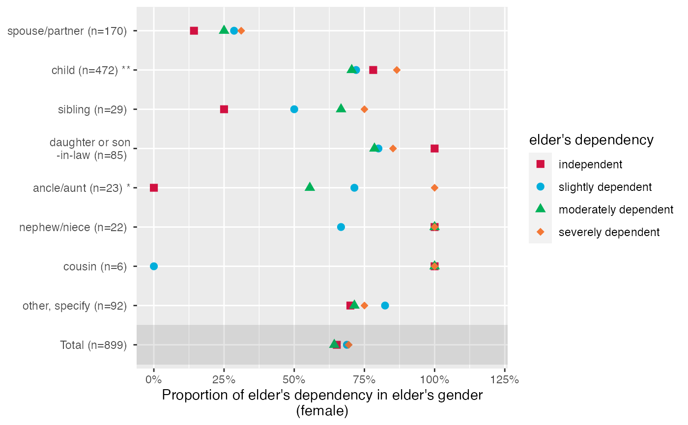
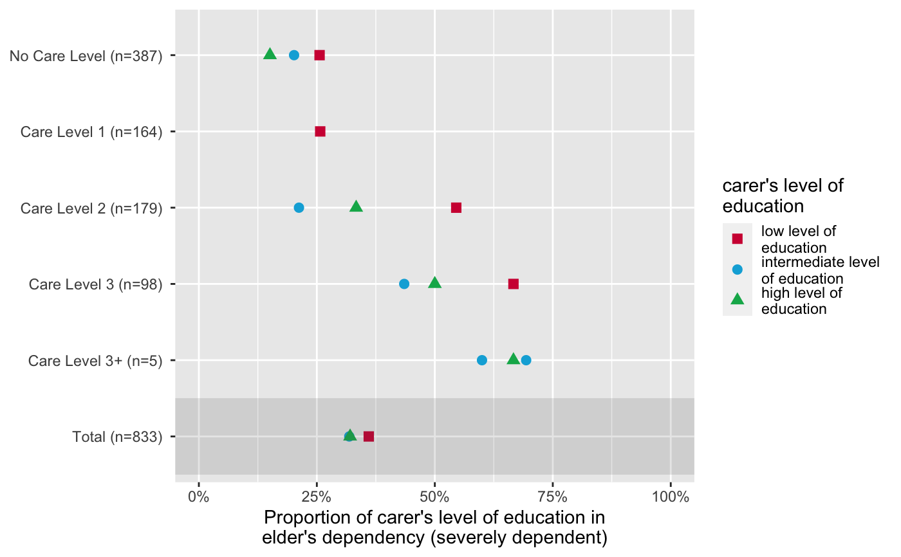

Plot grouped proportional crosstables, where the proportion of
each level of x for the highest category in y
is plotted, for each subgroup of grp.
plot_gpt(
data,
x,
y,
grp,
colors = "metro",
geom.size = 2.5,
shape.fill.color = "#f0f0f0",
shapes = c(15, 16, 17, 18, 21, 22, 23, 24, 25, 7, 8, 9, 10, 12),
title = NULL,
axis.labels = NULL,
axis.titles = NULL,
legend.title = NULL,
legend.labels = NULL,
wrap.title = 50,
wrap.labels = 15,
wrap.legend.title = 20,
wrap.legend.labels = 20,
axis.lim = NULL,
grid.breaks = NULL,
show.total = TRUE,
annotate.total = TRUE,
show.p = TRUE,
show.n = TRUE
)A data frame, or a grouped data frame.
Categorical variable, where the proportion of each category in
x for the highest category of y will be printed
along the x-axis.
Categorical or numeric variable. If not a binary variable, y
will be recoded into a binary variable, dichtomized at the highest
category and all remaining categories.
Grouping variable, which will define the y-axis
May be a character vector of color values in hex-format, valid
color value names (see demo("colors")) or a name of a pre-defined
color palette. Following options are valid for the colors argument:
If not specified, a default color brewer palette will be used, which is suitable for the plot style.
If "gs", a greyscale will be used.
If "bw", and plot-type is a line-plot, the plot is black/white and uses different line types to distinguish groups (see this package-vignette).
If colors is any valid color brewer palette name, the related palette will be used. Use RColorBrewer::display.brewer.all() to view all available palette names.
There are some pre-defined color palettes in this package, see sjPlot-themes for details.
Else specify own color values or names as vector (e.g. colors = "#00ff00" or colors = c("firebrick", "blue")).
size resp. width of the geoms (bar width, line thickness or point size, depending on plot type and function). Note that bar and bin widths mostly need smaller values than dot sizes.
Optional color vector, fill-color for non-filled shapes
Numeric vector with shape styles, used to map the different
categories of x.
Character vector, used as plot title. By default,
response_labels is called to retrieve the label of
the dependent variable, which will be used as title. Use title = ""
to remove title.
character vector with labels used as axis labels. Optional argument, since in most cases, axis labels are set automatically.
character vector of length one or two, defining the title(s) for the x-axis and y-axis.
Character vector, used as legend title for plots that have a legend.
character vector with labels for the guide/legend.
Numeric, determines how many chars of the plot title are displayed in one line and when a line break is inserted.
numeric, determines how many chars of the value, variable or axis labels are displayed in one line and when a line break is inserted.
numeric, determines how many chars of the legend's title are displayed in one line and when a line break is inserted.
numeric, determines how many chars of the legend labels are displayed in one line and when a line break is inserted.
Numeric vector of length 2, defining the range of the plot axis.
Depending on plot type, may effect either x- or y-axis, or both.
For multiple plot outputs (e.g., from type = "eff" or
type = "slope" in plot_model), axis.lim may
also be a list of vectors of length 2, defining axis limits for each
plot (only if non-faceted).
numeric; sets the distance between breaks for the axis,
i.e. at every grid.breaks'th position a major grid is being printed.
Logical, if TRUE, a total summary line for all aggregated
grp is added.
Logical, if TRUE and show.total = TRUE,
the total-row in the figure will be highlighted with a slightly
shaded background.
Logical, adds significance levels to values, or value and variable labels.
logical, if TRUE, adds total number of cases for each
group or category to the labels.
A ggplot-object.
The p-values are based on chisq.test of x
and y for each grp.
data(efc)
# the proportion of dependency levels in female
# elderly, for each family carer's relationship
# to elderly
plot_gpt(efc, e42dep, e16sex, e15relat)

# proportion of educational levels in highest
# dependency category of elderly, for different
# care levels
plot_gpt(efc, c172code, e42dep, n4pstu)
